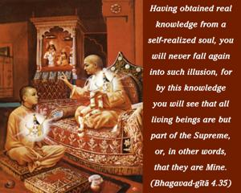
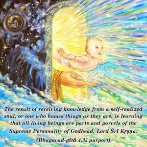
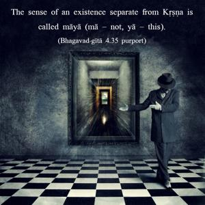

Having obtained real knowledge from a self-realized soul, you will never fall again into such illusion, for by this knowledge you will see that all living beings are but part of the Supreme, or, in other words, that they are Mine.



The result of receiving knowledge from a self-realized soul, or one who knows things as they are, is learning that all living beings are parts and parcels of the Supreme Personality of Godhead, Lord Śrī Kṛṣṇa. The sense of an existence separate from Kṛṣṇa is called māyā (mā – not, yā – this). Some think that we have nothing to do with Kṛṣṇa, that Kṛṣṇa is only a great historical personality and that the Absolute is the impersonal Brahman. Factually, as it is stated in the Bhagavad-gītā, this impersonal Brahman is the personal effulgence of Kṛṣṇa. Kṛṣṇa, as the Supreme Personality of Godhead, is the cause of everything. In the Brahma-saṁhitā it is clearly stated that Kṛṣṇa is the Supreme Personality of Godhead, the cause of all causes. Even the millions of incarnations are only His different expansions. Similarly, the living entities are also expansions of Kṛṣṇa. The Māyāvādī philosophers wrongly think that Kṛṣṇa loses His own separate existence in His many expansions. This thought is material in nature. We have experience in the material world that a thing, when fragmentally distributed, loses its own original identity. But the Māyāvādī philosophers fail to understand that absolute means that one plus one is equal to one, and that one minus one is also equal to one. This is the case in the absolute world.
For want of sufficient knowledge in the absolute science, we are now covered with illusion, and therefore we think that we are separate from Kṛṣṇa. Although we are separated parts of Kṛṣṇa, we are nevertheless not different from Him. The bodily difference of the living entities is māyā, or not actual fact. We are all meant to satisfy Kṛṣṇa. By māyā alone Arjuna thought that the temporary bodily relationship with his kinsmen was more important than his eternal spiritual relationship with Kṛṣṇa. The whole teaching of the Gītā is targeted toward this end: that a living being, as Kṛṣṇa’s eternal servitor, cannot be separated from Kṛṣṇa, and his sense of being an identity apart from Kṛṣṇa is called māyā. The living entities, as separate parts and parcels of the Supreme, have a purpose to fulfill. Having forgotten that purpose since time immemorial, they are situated in different bodies, as men, animals, demigods, etc. Such bodily differences arise from forgetfulness of the transcendental service of the Lord. But when one is engaged in transcendental service through Kṛṣṇa consciousness, one becomes at once liberated from this illusion. One can acquire such pure knowledge only from the bona fide spiritual master and thereby avoid the delusion that the living entity is equal to Kṛṣṇa. Perfect knowledge is that the Supreme Soul, Kṛṣṇa, is the supreme shelter for all living entities, and giving up such shelter, the living entities are deluded by the material energy, imagining themselves to have a separate identity. Thus, under different standards of material identity, they become forgetful of Kṛṣṇa. When, however, such deluded living entities become situated in Kṛṣṇa consciousness, it is to be understood that they are on the path of liberation, as confirmed in the Bhāgavatam (2.10.6): muktir hitvānyathā-rūpaṁ svarūpeṇa vyavasthitiḥ. Liberation means to be situated in one’s constitutional position as an eternal servitor of Kṛṣṇa (Kṛṣṇa consciousness).